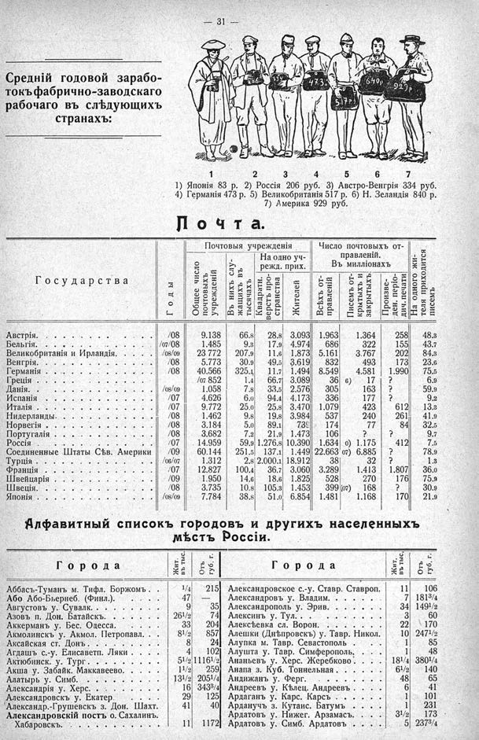

Лист источника 77
Скан

Распознанный текст
— 31 —
Средній годовой зарабо-
токъ фабрично-заводскаго
рабочаго въ слѣдующихъ
странахъ:
1 2 3 4 5 6 7
1) Японія 83 р. 2) Россія 206 руб. 3) Австро-Венгрія 334 руб.
4) Германія 473 р. 5) Великобританія 517 р. 6) Н. Зеландія 840 р.
7) Америка 929 руб.
Почта.
Государства
Годы
Почтовыя учрежденія
Общее число почтовыхъ учрежденій
Въ нихъ служащихъ въ тысячахъ
На одно учрежд. прих.
Квадратн. верстъ пространства
Жителей
Число почтовыхъ отправленій.
Въ милліонахъ
Всѣхъ отправленій
Писемъ открытыхъ и закрытыхъ
Произведен. періодич. печати
На одного жителя приходится писемъ
Австрія. /08 9.138 66.8 28.8 3.093 1.963 1.364 258 48.3
Бельгія. /07/08 1.485 9.3 17.9 4.974 686 322 155 43.7
Великобританія и Ирландія. /08/09 23 772 207.9 11.6 1.873 5.161 3.767 202 84.3
Венгрія. /08 5.773 30.9 49.5 3.619 832 493 173 23.6
Германія /08 40.566 325.1 11.7 1.494 8.549 4.581 1.990 75.5
Греція /07 852 1.4 66.7 3.089 36 6) 17 ? 6.9
Данія. /08/09 1.058 7.8 33.5 2.576 305 163 ? 59.9
Испанія /07 4.626 6.0 94.4 4.173 336 177 ? 9.2
Италія. /07 9.772 25.0 25.8 3.470 1.079 423 612 13.3
Нидерланды. /08 1.462 9.8 19.8 3.984 537 240 261 41.9
Норвегія /08 3.184 5.0 89.1 739 174 77 84 32.5
Португалія /08 3.682 7.2 21.9 1.473 106 ? ? 9.7
Россія /07 14.959 59.9 1.276.8 10.390 1.634 0) 1.175 412 7.5
Соединенные Штаты Сѣв. Америки /09 60.144 251.5 137.1 1.449 22.663 07) 6.885 ? 78.9
Турція. /06/07 1.312 2.8 2.000.1 18.912 38 32 ? 1.3
Франція /07 12.827 100.4 36.7 3.060 3.289 1.413 1.807 36.0
Швейцарія /09 1.950 14.6 18.6 1.825 528 270 176 75.9
Швеція. /08 3.735 10.8 105.3 1.453 399 [07) 168 ? 30.9
Японія. /08/09 7.784 38.8 51.0 6.854 1.481 1.168 170 21.9
Алфавитный списокъ городовъ и другихъ населенныхъ
мѣстъ Россіи.
Города
Жит. въ тыс.
Отъ губ. г.
Города
Жит. въ тыс.
Отъ губ. г.
Аббасъ-Туманъ м. Тифл. Боржомъ. 1/4 215
Або Або-Бьернеб. (Финл.). 47 —
Августовъ у. Сувалк.. 9 35
Азовъ п. Дон. Батайскъ. 261/2 74
Аккерманъ у. Бес. Одесса. 33 204
Акмолинскъ у. Акмол. Петропавл. 81/2 857
Аксайская ст. Донъ. 8 24
Агдашъ с.-у. Елисаветп. Ляки. 4 102
Актюбинск. у. Тург. 51/2 11161/2
Акша у. Забайк. Маккавеево. 11/2 259
Алатырь у. Симб. 131/2 2051/4
Александрія у. Херс. 16 3433/4
Александровскъ у. Екатер. 29 125
Александр.-Грушевскъ з. Дон. Шахт. 41 40
Александровскій постъ о. Сахалинъ. Хабаровскъ. 11 1172
Александровское с.-у. Ставр. Ставроп. 11 106
Александровъ у. Владим. 7 1813/4
Александрополь у. Эрив. 34 1491/2
Алексинъ у. Тул.. 3 60
Алексѣевка сл. Ворон. 22 170
Алешки (Днѣпровскъ) у. Тавр. Никол. 10 2471/2
Алупка м. Тавр. Севастополь 1 85
Алушта у. Тавр. Симферополь. 1 48
Ананьевъ у. Херс. Жеребково. 181/4 3801/4
Анапа з. Куб. Тоннельная. 61/2 140
Андижанъ у. Ферг. 48 65
Андреевъ у. Кѣлец. Андреевъ. 6 41
Ардаганъ у. Карс. Карсъ 1 101
Арданучъ з. Кутаис. Батумъ 1 231
Ардатовъ у. Нижег. Арзамасъ. 31/2 173
Ардатовъ у. Симб. Ардатовъ. 5 2373/4